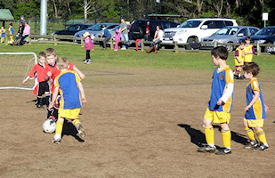
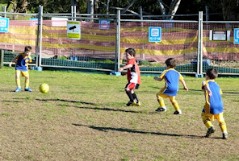
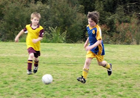
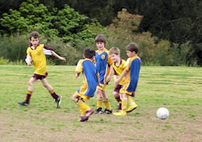
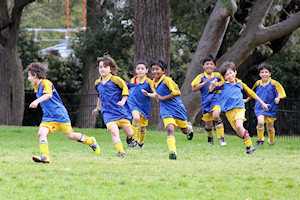
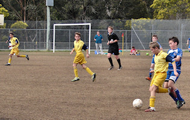

| Match Report - 06 August 2011 |
|
|
|
|
|
|
|
|
|
|


It looked like the team were not going to have a game on Saturday, as at 8:30
there were not any players from the Putney team @ Magdala. However a few minutes
later the team arrived ready for action and the U6 Greens were happy to get the
game under way. The first half North Ryde were attacking for the better part of
the game with 4 excellent goals from Elijah, Christian and Jasmine. The Putney
team were showing a lot of strength in their kick ins and tackling. Will and
Elijah made some excellent tackles and turn a rounds in play to keep the goals
out. Williams kicking was also strong.
After halftime the Putney team were all attacking and the U6 Green team were
taken by surprise (as were the spectators) when suddenly the score was 4-4 with
5 minutes remaining in the game. This was an excellent game, the suspense was
torturous and both teams played there best. It was the first time that the U6
Green looked like their undefeated record may be challenged. Needless to say
with 25 seconds on the clock Blake secured the game with a great goal... as you
can imagine the sideline erupted with happiness. Well done to both teams for a
great display of skill and determination.
- Sarah Robson
|
|
|
|
U6 Purple A
3 - 1
|
|
The weight of possession was with North Ryde during the early part of this match
with shots on goal from Ethan. Alex made a great save after the Sharks made a
break against the run of play. A Shark goal was quickly equalised by Eli.
Cameron’s strong breaks and shots on goal were the remaining highlight of the
first half.
Alex led the first attacking raid of the second half, then a break by the Sharks
meant he had to chase back in defence. A cracking shot from Alex resulted in our
second goal with Eli putting the result beyond doubt with another goal right on
full time.
Both sides were evenly matched demonstrating the skills they have learned from
this season with good teamwork and passing. The team keeps improving each week
and the boys will be looking to finish off the season on a high note next weekend.
- Gavin Lochrin
|
|
|
|
U6 Red A
|
|
As the mighty U6 Red A's marched onto the pitch for their last game of the season
parents stood lost in thought at how far the boys had come since the first kickoff
and exactly when the donuts would be handed out. The novelty of early morning soccer
matches wore off weeks ago but there was something bittersweet about this match, a
certain sadness that rolls in like a thick fog when fun times come to an end.
Watching the last game - that were largely just scrums at the beginning of the
season - reminds you of just how far each player, the whole team had come since
April. Not unlike Bahaus artisans, Lenore and Vera had molded U6 Red A's into a
work of art, the playing field transformed into a beautiful tapestry.
Each player brought their own strengths to the game and these were recognised as
the final awards were handed out:
Toby: Scoring first goal of the season
Jake: Best defender
Hayden: Powerful Kicking
Joshua: Most Improvement
Ben: Top Goal Scorer
Ollie: Best Striker
- Paul Watson
|
|
|
|
U6 White C
2 - 5
|
|
Fantastic weather to play our wet weather game against Holy Cross A. Holy Cross
won the game 5-2 and everyone had a great time. The warm sunshine was wonderful
and another fun morning of soccer!
- Lisa Mach
|
|
|
|
U7 White C
6 - 2
|
|
The boys had great fun playing the North Ryde B team in our last game of the
season (we have a bye next week).
The game got off to a great start for our boys scoring a few early goal. North
Ryde B had a few close shot on goal but were unlucky not to be on the board at
half time.
The second have was much closer with both team able to score a few goal with
some good passing and team work, Our team managed to hang on to our half time
lead to win 6-2. The score could have been a lot more for both teams with some
unlucky shots just missing the next.
Congratulations to all the boys on a good game played in great spirit. Also
well done on a great season and special thanks to coach Zhiron and Manager
Carmel for the great job done throughout the season.
- Andrew Seymour
|
|
|
|
U8 Brown
1 - 5
|
|


The second last game for the 2011 season and the sun was shining over Magdala
oval. The U8 Brown team had a lot of attacking play in the first half and
couldn't manage to break through the holy cross defense. All players were
playing to the best of their ability today. Issak made some great saves in
the first half clearing the ball back down to the players in free space.
Passing in the attack between Oliver, Luca and Sam made a lot of great runs
down the field, this was helped by Davids training before the game. Liam
did very well as he was fighting off the lergy and still madanged some great
plays, excellent through ins and almost scored an excellent goal from the back
line in the first half.
The second half Jake moved to the goals and again showed his skills in the goalie
position, 2 of the Holy Cross forwards literally sat at the top of the circle
ready to get a long pass which meant shot after shot was being taken and Jake
was great. Brooklyn was very strong in defense, putting his body on the line
again and again , then making a great run down the left sideline darting and
weaving through the holy cross players to take a shot from a very difficult
angle to score a goal.
Declan was consistent in attack and defense taking some hard tackles and
exhibiting his skills. The last 10 minutes the team were control all the play
in attack but again had difficulty breaking through. Overall an excellent game
and very entertaining to watch for all the spectators.
Thanks again to David for coaching and umpiring.
- Sarah Robson
|
|
|
|
U8 Orange
6 - 1
|
|

The weather was awesome, and we were grateful to get another game in before the
end of the season! We played on a great little oval at West Epping Primary School.
The boys had a fantastic first half, winning 5 to nil. They boys came off
exhilarated... Evan -"we're winning", Will - "I'm captain" and Aniruddh -
"we're tackling the other team better than they're tackling us!"
Hamish was excited with his" I got 3 goals - 2 lefties and one right foot!". Ryan
was first half goalie and saved heaps of balls.
Second half and the boys were having a great time! Finn, suffering an injury, was
in goals. Aniruddh did some great pull backs. Ricchi showed some great footwork
and Kevin - scored a great goal. Shaun put in a big effort and Will did some
great running and scored a goal too!
With a final score of 6/1, the boys had this to say... Ryan "we did good marking"
and Evan "we did good passing", Hamish "that was awesome!".
Hamish was declared man of the match for his 4 goals! (bringing his season total
to 6!)
- Michelle Saba
|
|
|
|
U11 Division 1
1 - 0
|
|

Well, it wasn't the prettiest game that our div 1's played this year, and can
best be described as a bit of a scramble, but it was enough to get them over
the line and run out as premiership winners for
the 2011 season!
Despite the confident 6 - 1 win against the same team last week, we were unable
to string together a meaningful game plan this week and our passing game all but
deserted us. For their part, Normanhurst played a strong defensive game and kept
us out of the goal-scoring zone for long periods of the game. Eventually a cross
from David found a charging Oscar who headed the ball neatly into the back of the
net, taking the score to 1 - 0, which is where it remained for the rest of the game.
Not the greatest win, but a win all the same and a win that was crucial to claiming
the premiership. We were level on points with West Pennant Hills and required a big
win today to have a shot at the title, but were ultimately aided by a determined
Kenthurst side who humbled West Pennant Hills into submission and produced a win
of their own that inadvertently helped us over the line.
The pressure is off now and the team will be looking to go into the final rounds
with a renewed sense of confidence and energy. They have worked hard all season
and have had reaped the benefits of their coach David's purpose-built drills and
training sessions this year, which has added game knowledge and situation awareness
to their arsenal of football skills. They are a talented young side and certainly
have the goods to go all the way.
Well done and good luck North Ryde!
- Mark Howard
|
|
|
|
U15 Division 2
1 - 0
|
|
For the fourteenth game of the year, with a clear day and an 11:00am start, the
boys played at Boronia Park against Epping Eastwood FC, who is currently 5th in
the GHFA competition. This is the team that beat us last week.
We had a squad of 12 players with Cameron injured, Kevin sick and Harry away.
- The boys were relaxed and with Lewis in Goals the first half and Nat in the second half there were no goals scored by Epping Eastwood today!
- Early in the game, Tom kicked a LHS goal just before the ball went out. 1-0
- This field has a slope we scored when we had the slope and stopped Epping Eastwood when they had the advantage.
A great effort to win the last round of the season, the Team finished in tie 2nd place!
I would like to thank all the parents who came to support our team... you do make
a difference!
- Joe Rosenfels
|